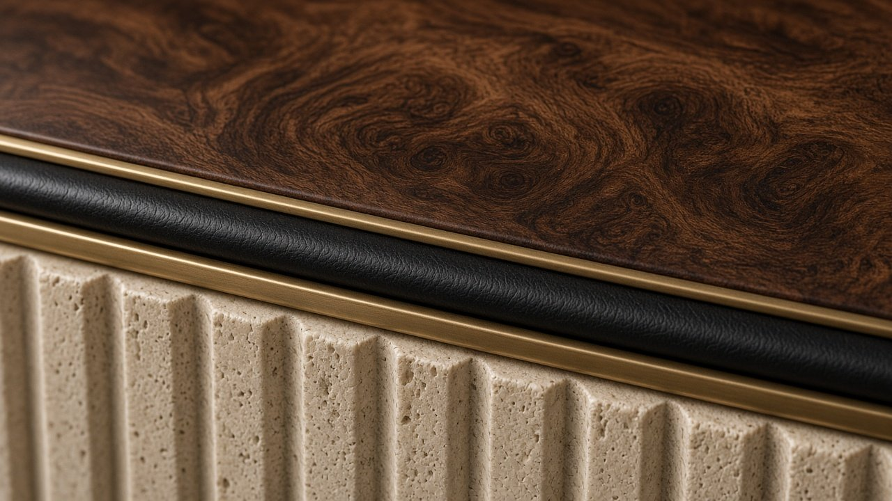
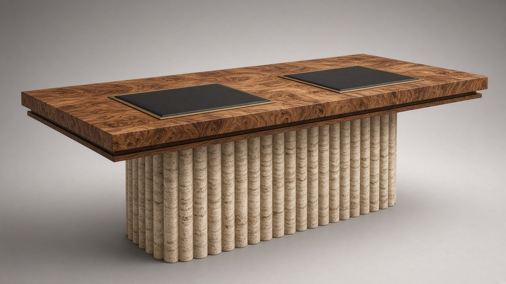

x.classList.remove('on'));this.classList.add('on')">
x.classList.remove('on'));this.classList.add('on')">← Coleção
N.º 07 · Coleção Meridiano
CÁVADO
Secretária de sócios
Dois postos frente a frente sobre uma base central de travertino canelado: a secretária de sócios reinventada.
Preço desde 28.000 €sem IVA · valor indicativo · versões por medida sob consulta
Descarregar ficha técnica (PDF)
Dimensões
| L × P × A | 2400 × 1200 × 750 mm |
| Superfície de escrita | 900 × 420 mm (×2) |
| Altura útil | 710 mm |
Materiais
| Tampo | Raiz de nogueira |
| Pele | Plena flor semi-anilina Ébano |
| Coluna / base | Travertino canelado |
| Metais | Latão e bronze escovados |